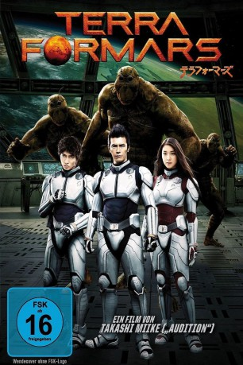

#4573 Terra Formars
 
 IMDB-Wertung: 4.9 / 10
IMDB-Wertung: 4.9 / 10  Metascore: 0
Metascore: 0 
Im 21. Jahrhundert beschließt die Menschheit, den Mars zu kolonisieren. Den Anfang machen robuste Kakerlaken, die auch mit ungastlichen Temperaturen klar kommen und zur Schaffung einer erdähnlichen Atmosphäre beitragen sollen. Fünfhundert Jahre später bricht eine bemannte Expedition auf, um nach dem Rechten zu sehen. Man stößt auf mutierte, humanoide Kakerlaken, die jeden Ankömmling als Feind betrachten. Doch auch die Astronauten haben so ihre versteckten Stärken und erweisen sich als ebenbürtige Gegner.
Jahr: 2016
Dauer: 109 Minuten
FSK: 16
Land: Japan Studio: Splendid FilmTonspuren:
Untertitel: Deutsch,
Auflösung: 1080p (1920x804) Größe: 5304 MB
Genre: Action, Horror, Sci-Fi
Regisseur: Takashi Miike
Drehbuch: Sy Bartlett
Soundtrack:
Darsteller:
- Rinko Kikuchi als Asuka Moriki
- Rila Fukushima als Sakakibara
- Kane Kosugi als God Lee
- Takayuki Yamada als Ichiro Hiruma
- Emi Takei als Nanao Akita
- Shun Oguri als Ko Honda
- Hideaki Itô als Shokichi Komachi
- Masaya Katô als Keisuke Dojima
- Tomohisa Yamashita als Jim Muto
- Eiko Koike als Mina Obari
- Rina Ohta als Maria Renjo
- Mariko Shinoda als Sorae Osako
- Ken'ichi Takitô als Shunji Tezuka
- Ken Aoki als
Datei: X:\HD-Eastern-Modern(N-Z)\Terra Formars (2016, FSK16, 1920x804).mkv seit 17.10.2016
Festplatte: HD Eastern+Western
 Es gibt insgesamt 76 Filme in der Gruppe 'HD-Eastern-Modern(N-Z)'
Es gibt insgesamt 76 Filme in der Gruppe 'HD-Eastern-Modern(N-Z)'